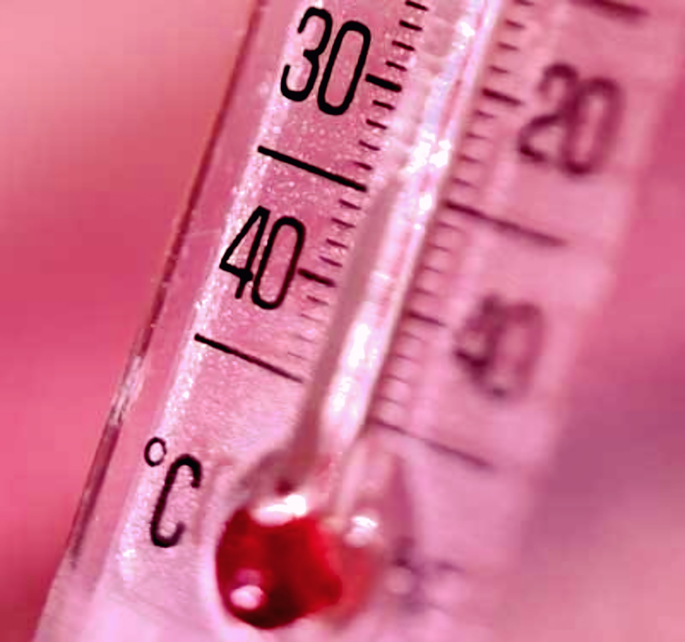

TEMPERATURA
A temperatura é uma grandeza física que mensura o estado de agitação das partículas de um corpo. Ela está diretamente relacionada à energia cinética média dessas partículas: quanto mais intensos são o movimento e a vibração molecular, mais elevada é a temperatura.

Calor
O calor é o fluxo de energia que flui do corpo mais quente para o mais frio até que eles atinjam o equilíbrio térmico, sendo assim uma grandeza física escalar, como massa e até mesmo temperatura.
Existem dois tipos de calor: o calor sensível, que ocorre quando há apenas a variação da temperatura do corpo (aumentando ou diminuindo); e o calor latente, que ocorre quando há apenas a mudança de estado físico, como a passagem para o sólido, líquido ou gasoso.
Medição de temperatura
Escalas termométricas são representações dos valores de temperatura em outras escalas, sendo as mais comuns Celsius, Fahrenheit e Kelvin. A fórmula usada na conversão das escalas termométricas é:
C / 5 = (F - 32) / 9 = (K - 273) / 5
Átomos e moléculas estão em constante movimento em qualquer corpo, seja ele sólido, líquido ou gasoso. Nos sólidos, as moléculas estão muito próximas e a força de atração entre elas é intensa; por isso, não possuem liberdade para se deslocar, apenas para vibrar em posições fixas.
Já nos líquidos e gases, não há uma estrutura organizada. Nos gases, por exemplo, a agitação é tão alta que as moléculas perdem quase todo o contato entre si, movendo-se de forma aleatória e em alta velocidade. Em suma: quanto maior for a agitação das moléculas, maior será a temperatura do corpo.